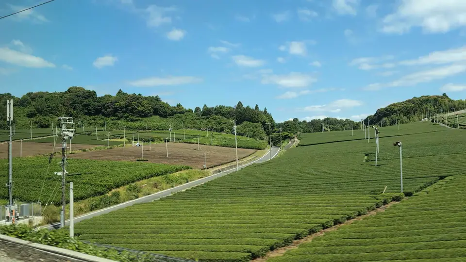
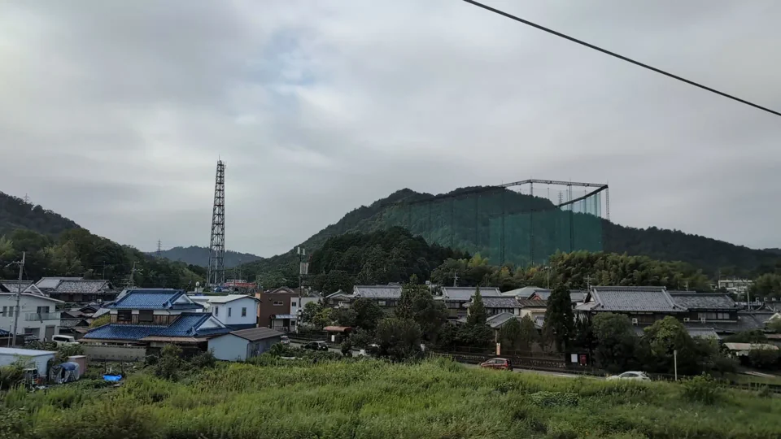

01 / EL JAPÓN COTIDIANO
Empieza por la forma que recuerdas
No son atracciones colocadas para el tren. Son campos de cultivo, fábricas, instalaciones deportivas y símbolos sagrados: partes corrientes de Japón que sorprenden cuando pasan fugazmente por la ventanilla.

Qué son esas hileras de verde intenso?
La respuestaLos campos de té de Shizuoka
Los arbustos de té se podan en setos largos y redondeados que siguen el relieve de las colinas. En primavera, las primeras hojas nuevas tiñen los campos de un amarillo verdoso intenso, uno de los paisajes característicos de Shizuoka.
Vuelve a mirar. ¿Y los ventiladores? Las hélices sobre las hileras protegen contra las heladas. En las noches frías de primavera impulsan aire relativamente más cálido hacia los tiernos brotes nuevos.

Por qué hay tantas chimeneas bajo el monte Fuji?
La respuestaLas fábricas de papel de Fuji
Fuji es una de las grandes ciudades papeleras de Japón. Sus fábricas crecieron gracias a las abundantes aguas subterráneas del monte Fuji y al agua industrial del río Fuji; las columnas blancas son vapor de un paisaje industrial en funcionamiento.
Vuelve a mirar. Sigue mirando por el lado del asiento E después del monte Fuji. Aproximadamente un minuto antes de Shin-Fuji, los campos del primer plano dan paso a chimeneas, depósitos y tuberías.

Qué son esos largos tejados plateados?
La respuestaInvernaderos de la región agrícola de Mikawa oriental
Estos invernaderos, llamados a menudo «casas de vinilo» en Japón, anuncian una región de tomates, mandarinas, hierbas y flores. El cultivo de cada uno queda oculto, pero los tejados plateados, el agua de riego y el cartel rojo de mandarinas tienen una historia que contar.
Vuelve a mirar. Las mandarinas de invernadero de Gamagori llegan en primavera y verano. En otros lugares de Aichi, los productores usan luz para cambiar la época de floración de los crisantemos. Descubre el trabajo que hay detrás de la comida y las flores de Japón.

Qué son esas redes verdes gigantes?
La respuestaUn campo de prácticas de golf: uchippanashi en japonés
Las redes evitan que las pelotas lleguen a las casas y carreteras cercanas. En las ciudades japonesas, muchos campos de prácticas tienen puestos de golpeo en dos o tres plantas, por lo que parecen una jaula gigante.
Vuelve a mirar. Este pasa por el lado del asiento E entre Maibara y Kioto, con tejados delante y una colina arbolada detrás. El formato no es exclusivo de Japón, pero es habitual en sus ciudades. Uchippanashi (打ちっぱなし) significa aproximadamente «seguir golpeando».
Campos de prácticas de golf en Japón ↗Un visitante primerizo pregunta qué es ↗

Por qué hay una puerta roja gigante en los campos?
La respuestaEl gran torii de Nangu Taisha
Un torii señala el acceso a un santuario sintoísta. Este se alza sobre la carretera, a aproximadamente un kilómetro del propio Nangu Taisha, anunciando la entrada mucho antes de que se vea el santuario.
Vuelve a mirar. Con más de 21 metros de altura, pasa por el lado del asiento A entre Gifu-Hashima y Maibara. Los campos bajos que lo rodean hacen que la puerta roja parezca aún mayor.
02 / KINTETSU · NARA Y MIE
Palacios y estatuas gigantes junto a Kintetsu
Estas dos vistas están en las líneas convencionales de Kintetsu, no en el Tokaido Shinkansen. Comprueba la línea y ubicación indicadas abajo; los horarios y consejos de asientos del Shinkansen de este sitio no se aplican aquí.
 Abrir el vídeo de X
Abrir el vídeo de X奈良の車窓から。#平城宮跡 #朱雀門 #近鉄
— @fuku_musuko Original post
¿Una puerta roja y un palacio al otro lado de las vías?
Respuesta: La puerta Suzaku y el salón Daigokuden del palacio de Heijo
La línea Kintetsu Nara cruza el recinto del palacio de Heijo. Hacia Kintetsu-Nara, mira a la derecha para ver la puerta Suzaku y a lo lejos a la izquierda para el salón Daigokuden. Ambos edificios son reconstrucciones. El ferrocarril abrió en 1914, mucho antes de que el recinto pasara a formar parte del Patrimonio Mundial.
 Abrir el vídeo de X
Abrir el vídeo de X近鉄榊原温泉口駅から見える、今日のルーブル彫刻美術館。
— @Haatainen Original post
¿Una Kannon dorada y una estatua alada gigante?
Respuesta: El templo Daikannonji y el Museo de Esculturas del Louvre
La Kannon dorada de 33 metros pertenece al templo Daikannonji. Cerca, el Museo de Esculturas del Louvre expone enormes estatuas al aire libre de la Victoria de Samotracia y la Venus de Milo. Están junto a la línea Kintetsu Osaka, cerca de la estación Sakakibara-onsenguchi. Se puede llegar a ambos lugares a pie desde la estación.
Templo Daikannonji (japonés) ↗Museo de Esculturas del Louvre (japonés) ↗
¿Recuerdas un cartel 727?
 Encuentra tu cartel en el índice de fotos y ubicaciones de 727 →
Encuentra tu cartel en el índice de fotos y ubicaciones de 727 →
Compara la fotografía y utiliza el mapa o la lista de ubicaciones para encontrar dónde lo viste.
Para las vistas del Tokaido Shinkansen, elige tu tren y consulta cuándo deberían pasar, o explora la guía completa de castillos, carteles, ríos y mucho más.
Sobre estas vistas
Nuestras fotos muestran vistas del Tokaido Shinkansen. Los tiempos son estimaciones basadas en Nozomi; empieza a mirar un poco antes. La sección independiente de Kintetsu utiliza vídeos originales de X con crédito a sus creadores. Cargar un vídeo conecta con X; también puedes abrir la publicación original. Las vistas de Kintetsu no están incluidas en la cronología del Shinkansen.